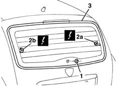
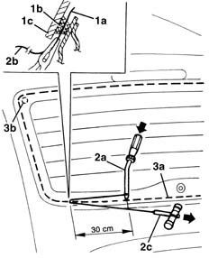
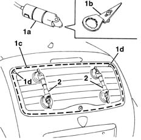
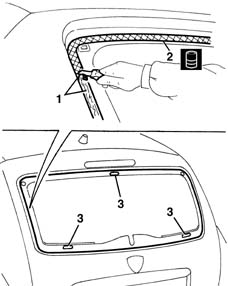
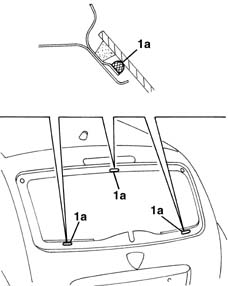
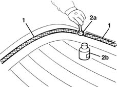
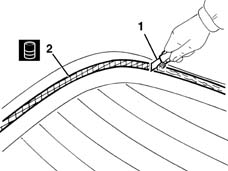
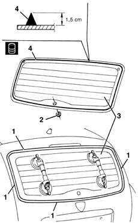
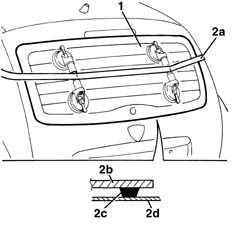

7035B14 rear window glass r r includes cleaning of housing
- Path
- Procedures > 70 FITTINGS > 7035 BODYSHELL WINDOWS > 7035B rear window > 7035B14 rear window glass r r includes cleaning of housing
- Kind
- repair procedure (removal / refitting; the operation number is the code)
- Applies to
- all engines; all production periods
- Interactive page
- https://sloeber94.github.io/elrnDB-lYpsln/en/#/2429566
Applies to: all engines; all production periods
 Removing
Removing
 Refitting
Refitting7015A04 tailgate interior panel - r+r
5050C34 rear wiper arm with blade - r+r
5050C42 rear wiper motor - r+r
1. Remove the rearscreen wiper motor shaft seal.
2. Disconnect the heated rear window electrical connections (2a, 2b).
 | Name | Connector |
|---|---|---|
2a | Heated rear windscreen |
| Name | Connector |
|---|---|---|
2b | Heated rear windscreen |
Move aside the electrical connections on the rear window side so as not to damage them while cutting the bead of sealant.
3. Apply a double layer of adhesive tape to protect the edges of the bodywork.

Applies to: all engines; all production periods
The bead of sealant for the rearscreen can be cut using either harmonic wire or the vibrating knife; both methods are described below.
To cut the bead using harmonic wire, proceed as described below.
1. Cut a section of harmonic wire about 50 cm long then, using pliers, insert one end (1a) of the harmonic wire through the bead of sealant (1b) which secures the rear window (1c).
2. Secure the end (1a) of the wire to the retaining tool (2a) located inside the car. Secure the end (2b) of the traction handle (2c) located outside the vehicle.
3. The operator inside the car must keep the end of the tool (2a) on the bead of sealant (3a) at about 30 cm from the point of passage of the wire. The other operator outside the car must pull the handle (2c) following the outline of the rear window, and cut the bead of sealant (3a). Repeat the operation in sections of about 30 cm, until the whole of the bead of sealant (3a) is cut. During cutting, be careful with the rear window's centring side pins (3b).

Applies to: all engines; all production periods
To cut the bead using the vibrating knife, proceed as described below.
1. Use the vibrating knife (1a), with blade (1b), and cut the bead of sealant along the entire preimeter of the rear window, working from inside the car. During cutting, be careful with the rear window's centring side pins (1d).
2. After having cut the entire bead of sealant, fit the suction pads to the rearscreen; then, with the assistance of a second operator, remove the rearscreen and rest it on a support.

Applies to: all engines; all production periods
Refitting
Removing1. Using a suitable tool, cut and smooth off the bead of sealant in the rear window frame, so as to leave a thickness of between 0.25 and 1 mm, without scratching the paintwork. The sealant left in the frame will act as a backing for the new bond.
2. Clean the rear window seating carefully with compressed air and degrease thoroughly with heptane. If glueing takes place 60 minutes after cutting and smoothing the bead of sealant, treat the sealant surface with the specific activator and wait 15 minutes before fixing the windscreen.
 | Type | Component | Name | Qty. |
|---|---|---|---|---|
2 | PUR activator | REARSCREEN HOUSING | - | - |
3. Clean and degrease the three window mounting seats.
Touch up the paintwork if necessary.

Applies to: all engines; all production periods
1. Replace the window adhesive mountings (1a) in the rearscreen housing with new components from the parts department.

Applies to: all engines; all production periods
Preparing a new rearscreeen.
1. Degrease the screen printed area around the edge of the new window to be glued.
2. Using the swab (2a) supplied in the kit, apply the glass adhesion promoter (primer) (2b) on the printed perimeter.

Applies to: all engines; all production periods
Preparing a detached rearscreen.
1. With a suitable tool (1a), cut and smooth off the bead of sealant on the rear window in order to reduce the thickness to a minimum. It is not necessary to completely remove the remaining sealant; take care not to damage the black screen printing around the edge of the window.
2. Carefullly clean the printed area around the edge of the window with compressed air and thoroughly degrease with heptane. Check that the window is undamaged. It is not necessary to insert new centring pins (2a). If glueing takes place 60 minutes after cutting and smoothing the bead of sealant, treat the sealant surface with the specific activator and wait 15 minutes before fixing the windscreen.
| Type | Component | Name | Qty. |
|---|---|---|---|---|
2 | PUR activator | REAR WINDOW GLASS | - | - |

Applies to: all engines; all production periods
1. Remove the adhesive tape from the edges of the bodywork.
5050C42 rear wiper motor - r+r
2. Fit the seal on the window.
3. Test fit the rearscreen and centre it perfectly.
4. Use an air gun to extrude a bead of sealant as evenly as possible along the perimeter of the rear window.
| Type | Component | Name | Qty. |
|---|---|---|---|---|
4 | Window bonding sealant | REAR WINDOW GLASS | Product n. 71711976 | - |

Applies to: all engines; all production periods
1. With the assistance of a second operator, fit the rear window in its seating immediately after applying the sealant and bed it in place.
2. Fit the retaining belt (2a) as shown in the figure and adjust belt tension to apply uniform pressure over the entire back window in order to ensure a correct match between window (2b), sealant (2c) and rear window frame (2d).

Applies to: all engines; all production periods
Before refitting the car's exterior and interior components, check that there are no leaks by conducting a water test.
Connect the electrical connections to the rearscreen.
Topics linked from this page (5)
- 5050C34 rear wiper arm with blade - r+r
- 5050C42 rear wiper motor - r+r
- 7015A04 tailgate interior panel - r+r
- P55A Heated rear windscreen ( REAR )
- P55B Heated rear windscreen ( REAR )